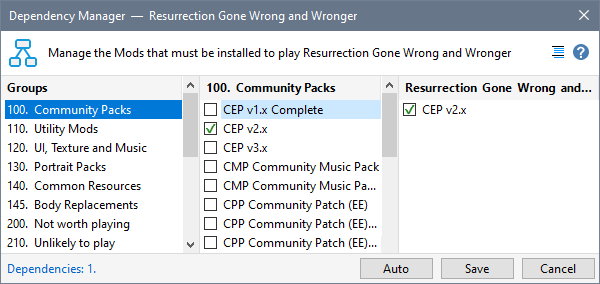
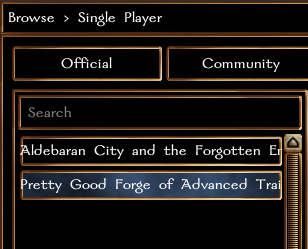

Mod authors recommend uninstalling other Mods and keeping the override folder clear to ensure their Mod works as designed. This is the approach I use to keep the override and patch HAK folder as “clean” as possible in terms of running other mods.
- Uninstall all Mods except the ones you want as part of your base setup. For example, Pretty Good Forge of Advanced Training. The Installation Manager makes it easy to uninstall all your Mods except for the ones you want to retain.

- For all other playable Mods, use the Dependency Manager to ensure that dependencies are defined for each Mod (automated when you use the Installer Tool to download the Project) so that when you install the Mod, its dependencies are also installed.

- Uninstall the Mod when you have finished playing it, which also uninstalls the dependencies.

You will notice that the list of available games in Neverwinter Nights is extremely short when you apply these practices.
